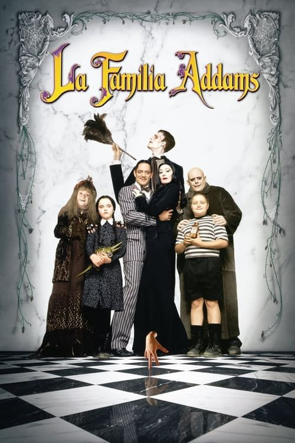

Comedia Negra Familiar: 7 Películas que te Harán Reír (y Quizás Sentirte Incómodo)
Risas con un toque oscuro. Estas 7 comedias familiares te harán reír, pero también pensar.
- La familia Addams (1991)
Los Addams, una familia con un peculiar gusto por lo macabro, se enfrentan a una amenaza que podría destruir su peculiar estilo de vida. ¿Podrán defender su hogar y su particular forma de ser?